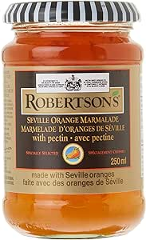

Orange Marmalde

Description
This is by far my favourite marmalade recipe. There is something about oranges. What a delightful fruit. If I had to be a fruit it would definitely be an orange. A delicious orange. Oh so round and sweet!
If I were be made into a jar of orange maramalde, I wouldn't be mad. That's just life. And if I were to be a jar of orange marmalde, I know that I have lived a yummy life.
Try this orange marmalade recipe and see if you would also like to be a jar of marmalade.
Ingredients
-
5 small navel oranges (about 2¼ pounds), washed and scrubbed
-
1 medium lemon, washed and scrubbed
-
6 cups water
-
3 ½ cups granulated sugar
Steps
-
Slice off and discard tops and bottoms from oranges and lemon. Peel off and discard skin and pith of 3 of the oranges. Quarter all oranges and lemon lengthwise, then thinly slice into 1/8-inch slices, discarding seeds while slicing. Place all citrus slices in a large bowl and cover with water. Cover and refrigerate for at least 8 hours and up to 24 hours.
-
Pour orange and lemon slices along with water into a large stainless steel saucepan or Dutch oven. Bring to a boil over high heat. Once boiling, reduce heat to medium and simmer, uncovered, stirring occasionally, until orange rinds have softened and can be cut with a spoon with slight resistance, about 45 minutes, skimming any foam that rises to top during process.
-
Pour orange and lemon slices along with water into a large stainless steel saucepan or Dutch oven. Bring to a boil over high heat. Once boiling, reduce heat to medium and simmer, uncovered, stirring occasionally, until orange rinds have softened and can be cut with a spoon with slight resistance, about 45 minutes, skimming any foam that rises to top during process.
-
Add sugar to orange mixture and bring to a boil over high heat. Cook, stirring occasionally, until liquid has slightly reduced, bubbles are slightly larger in center, and a thermometer reads 220 degrees F (104 degrees C) about 40 to 45 minutes. Mixture will stay between 212 degrees F (100 degrees C) and 216 degrees F (102 degrees C) for the majority of this time and will rise to 220 degrees F (104 degrees C) when enough liquid has evaporated
-
To test if marmalade consistency is correct, remove plate from freezer and spoon a small amount of marmalade onto plate. Return plate to freezer for 1 minute. Remove plate from freezer; pull a finger through marmalade and across plate. It should leave a clean trail. If marmalade is runny and does not leave a clean trail, return mixture in pot to a boil over medium-high, and return plate to freezer. Boil marmalade, stirring often, for 3 minutes. Remove from heat, and retest thickness using plate again; repeat if necessary until it reaches desired thickness.
-
Carefully pour marmalade evenly into the prepared canning jars. Let cool to room temperature, uncovered, about 3 hours. Seal jars. Chill until marmalade sets, at least 2 hours. Store in refrigerator for up to 2 weeks.